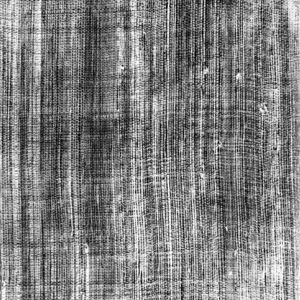
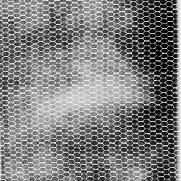
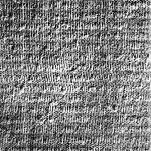

<!DOCTYPE html>
<html>

<head>
    <title>Triplet Embeddings: Textures</title>
    <script src="https://unpkg.com/jspsych@7.3.4"></script>
    <link href="https://unpkg.com/jspsych@7.3.4/css/jspsych.css" rel="stylesheet" type="text/css" />

    <script src="https://unpkg.com/@jspsych/plugin-html-keyboard-response@2.0.0"></script>
    <script src="https://unpkg.com/@jspsych/plugin-image-keyboard-response@1.1.0"></script>
    <script src="https://unpkg.com/@jspsych/plugin-image-button-response@1.1.0"></script>
    <script src="https://unpkg.com/@jspsych/plugin-fullscreen@1.1.0"></script>
    <script src="https://unpkg.com/@jspsych/plugin-audio-button-response@1.1.0"></script>
    <script src="https://unpkg.com/@jspsych/plugin-audio-keyboard-response@1.1.0"></script>
    <script src="https://unpkg.com/@jspsych/plugin-survey-multi-select@1.1.0"></script>
    <script src="https://unpkg.com/@jspsych/plugin-survey-text@1.1.0"></script>
    <script src="https://unpkg.com/@jspsych/plugin-html-button-response@1.1.0"></script>
    <script src="https://unpkg.com/@jspsych/plugin-survey-likert@1.1.0"></script>
    <script src="https://unpkg.com/@jspsych/plugin-call-function@1.1.0"></script>
    <script src="https://unpkg.com/@jspsych/plugin-preload@1.1.0"></script>
    <script src="https://unpkg.com/@jspsych-contrib/plugin-pipe"></script>
</head>

<body></body>
<script>

    //initiate 
    var jsPsych = initJsPsych({
        show_progress_bar: false,
        on_data_update: function () {
            timeline.push(save_data);
        },
        on_finish: function () {
            timeline.push(save_data);
        },
        max_load_time: 120000,
    });

    // Create timeline variable //
    var timeline = []; //timeline for experiment (once ID is registered)

    //SONA

    // Capture the participant ID
    let sona_id = jsPsych.data.urlVariables()['sona_id']

    const SONA_ID = jsPsych.data.urlVariables()['sona_id']

    //create random ids
    const subject_id = jsPsych.randomization.randomID(10);
    const filename = `${subject_id}.csv`;

    // Set background color to gray //
    document.body.style.backgroundColor = "rgb(128,128,128)"


    var urlvar = jsPsych.data.urlVariables();

    const save_data = {
        type: jsPsychPipe,
        action: "save",
        experiment_id: "ZaaHT6UrsmnC",
        filename: filename,
        wait_message: 'Please wait a moment while the next page loads.',
        data_string: () => jsPsych.data.get().csv(),
        on_finish: (data) => {
            console.log("Data saved:", data);
        }
    };

    var preload = {
        type: jsPsychPreload,
        //auto_preload: true,
        images: [
            //instruction images
            'materials/imgs/instruction_images/InstructionImg1D78.png', 'materials/imgs/instruction_images/InstructionImg2D34.png', 'materials/imgs/instruction_images/InstructionImg3D80.png',
            //trial images
            "materials/imgs/D1.png",
            "materials/imgs/D101.png",
            "materials/imgs/D102.png",
            "materials/imgs/D103.png",
            "materials/imgs/D104.png",
            "materials/imgs/D105.png",
            "materials/imgs/D106.png",
            "materials/imgs/D11.png",
            "materials/imgs/D111.png",
            "materials/imgs/D14.png",
            "materials/imgs/D16.png",
            "materials/imgs/D17.png",
            "materials/imgs/D18.png",
            "materials/imgs/D19.png",
            "materials/imgs/D20.png",
            "materials/imgs/D21.png",
            "materials/imgs/D22.png",
            "materials/imgs/D24.png",
            "materials/imgs/D25.png",
            "materials/imgs/D26.png",
            "materials/imgs/D29.png",
            "materials/imgs/D3.png",
            "materials/imgs/D32.png",
            "materials/imgs/D34.png",
            "materials/imgs/D35.png",
            "materials/imgs/D36.png",
            "materials/imgs/D37.png",
            "materials/imgs/D4.png",
            "materials/imgs/D46.png",
            "materials/imgs/D47.png",
            "materials/imgs/D48.png",
            "materials/imgs/D49.png",
            "materials/imgs/D51.png",
            "materials/imgs/D52.png",
            "materials/imgs/D53.png",
            "materials/imgs/D55.png",
            "materials/imgs/D56.png",
            "materials/imgs/D57.png",
            "materials/imgs/D6.png",
            "materials/imgs/D64.png",
            "materials/imgs/D65.png",
            "materials/imgs/D66.png",
            "materials/imgs/D68.png",
            "materials/imgs/D74.png",
            "materials/imgs/D75.png",
            "materials/imgs/D76.png",
            "materials/imgs/D77.png",
            "materials/imgs/D78.png",
            "materials/imgs/D79.png",
            "materials/imgs/D8.png",
            "materials/imgs/D80.png",
            "materials/imgs/D81.png",
            "materials/imgs/D82.png",
            "materials/imgs/D83.png",
            "materials/imgs/D84.png",
            "materials/imgs/D85.png",
            "materials/imgs/D87.png",
            "materials/imgs/D9.png",
            "materials/imgs/D92.png",
            "materials/imgs/D94.png",
            "materials/imgs/D95.png",
            "materials/imgs/D96.png"
        ],
        show_progress_bar: true,
        message: "Loading experiment files...",
        error_message:
            "Oops! There's a problem loading files. Please refresh the page to try again.",
    };
    jsPsych.data.addProperties({
        subject_id: subject_id,
        sona_id: SONA_ID
    });
    timeline.push(preload);

    var stimuli_texture = [
        { texture: "materials/imgs/D1.png" },
        { texture: "materials/imgs/D101.png" },
        { texture: "materials/imgs/D102.png" },
        { texture: "materials/imgs/D103.png" },
        { texture: "materials/imgs/D104.png" },
        { texture: "materials/imgs/D105.png" },
        { texture: "materials/imgs/D106.png" },
        { texture: "materials/imgs/D11.png" },
        { texture: "materials/imgs/D111.png" },
        { texture: "materials/imgs/D14.png" },
        { texture: "materials/imgs/D16.png" },
        { texture: "materials/imgs/D17.png" },
        { texture: "materials/imgs/D18.png" },
        { texture: "materials/imgs/D19.png" },
        { texture: "materials/imgs/D20.png" },
        { texture: "materials/imgs/D21.png" },
        { texture: "materials/imgs/D22.png" },
        { texture: "materials/imgs/D24.png" },
        { texture: "materials/imgs/D25.png" },
        { texture: "materials/imgs/D26.png" },
        { texture: "materials/imgs/D29.png" },
        { texture: "materials/imgs/D3.png" },
        { texture: "materials/imgs/D32.png" },
        { texture: "materials/imgs/D34.png" },
        { texture: "materials/imgs/D35.png" },
        { texture: "materials/imgs/D36.png" },
        { texture: "materials/imgs/D37.png" },
        { texture: "materials/imgs/D4.png" },
        { texture: "materials/imgs/D46.png" },
        { texture: "materials/imgs/D47.png" },
        { texture: "materials/imgs/D48.png" },
        { texture: "materials/imgs/D49.png" },
        { texture: "materials/imgs/D51.png" },
        { texture: "materials/imgs/D52.png" },
        { texture: "materials/imgs/D53.png" },
        { texture: "materials/imgs/D55.png" },
        { texture: "materials/imgs/D56.png" },
        { texture: "materials/imgs/D57.png" },
        { texture: "materials/imgs/D6.png" },
        { texture: "materials/imgs/D64.png" },
        { texture: "materials/imgs/D65.png" },
        { texture: "materials/imgs/D66.png" },
        { texture: "materials/imgs/D68.png" },
        { texture: "materials/imgs/D74.png" },
        { texture: "materials/imgs/D75.png" },
        { texture: "materials/imgs/D76.png" },
        { texture: "materials/imgs/D77.png" },
        { texture: "materials/imgs/D78.png" },
        { texture: "materials/imgs/D79.png" },
        { texture: "materials/imgs/D8.png" },
        { texture: "materials/imgs/D80.png" },
        { texture: "materials/imgs/D81.png" },
        { texture: "materials/imgs/D82.png" },
        { texture: "materials/imgs/D83.png" },
        { texture: "materials/imgs/D84.png" },
        { texture: "materials/imgs/D85.png" },
        { texture: "materials/imgs/D87.png" },
        { texture: "materials/imgs/D9.png" },
        { texture: "materials/imgs/D92.png" },
        { texture: "materials/imgs/D94.png" },
        { texture: "materials/imgs/D95.png" },
        { texture: "materials/imgs/D96.png" }
    ];

    var texture_arr = [
        "materials/imgs/D1.png",
        "materials/imgs/D101.png",
        "materials/imgs/D102.png",
        "materials/imgs/D103.png",
        "materials/imgs/D104.png",
        "materials/imgs/D105.png",
        "materials/imgs/D106.png",
        "materials/imgs/D11.png",
        "materials/imgs/D111.png",
        "materials/imgs/D14.png",
        "materials/imgs/D16.png",
        "materials/imgs/D17.png",
        "materials/imgs/D18.png",
        "materials/imgs/D19.png",
        "materials/imgs/D20.png",
        "materials/imgs/D21.png",
        "materials/imgs/D22.png",
        "materials/imgs/D24.png",
        "materials/imgs/D25.png",
        "materials/imgs/D26.png",
        "materials/imgs/D29.png",
        "materials/imgs/D3.png",
        "materials/imgs/D32.png",
        "materials/imgs/D34.png",
        "materials/imgs/D35.png",
        "materials/imgs/D36.png",
        "materials/imgs/D37.png",
        "materials/imgs/D4.png",
        "materials/imgs/D46.png",
        "materials/imgs/D47.png",
        "materials/imgs/D48.png",
        "materials/imgs/D49.png",
        "materials/imgs/D51.png",
        "materials/imgs/D52.png",
        "materials/imgs/D53.png",
        "materials/imgs/D55.png",
        "materials/imgs/D56.png",
        "materials/imgs/D57.png",
        "materials/imgs/D6.png",
        "materials/imgs/D64.png",
        "materials/imgs/D65.png",
        "materials/imgs/D66.png",
        "materials/imgs/D68.png",
        "materials/imgs/D74.png",
        "materials/imgs/D75.png",
        "materials/imgs/D76.png",
        "materials/imgs/D77.png",
        "materials/imgs/D78.png",
        "materials/imgs/D79.png",
        "materials/imgs/D8.png",
        "materials/imgs/D80.png",
        "materials/imgs/D81.png",
        "materials/imgs/D82.png",
        "materials/imgs/D83.png",
        "materials/imgs/D84.png",
        "materials/imgs/D85.png",
        "materials/imgs/D87.png",
        "materials/imgs/D9.png",
        "materials/imgs/D92.png",
        "materials/imgs/D94.png",
        "materials/imgs/D95.png",
        "materials/imgs/D96.png"
    ];

    //plan:
    //1) make a pool of random triplets
    //2) sample

    var validation_textures = [
        {
            head: 'materials/imgs/D1.png',
            choice_1: 'materials/imgs/D57.png',
            choice_2: 'materials/imgs/D76.png'
        },
        {
            head: 'materials/imgs/D101.png',
            choice_1: 'materials/imgs/D76.png',
            choice_2: 'materials/imgs/D47.png'
        },
        {
            head: 'materials/imgs/D102.png',
            choice_1: 'materials/imgs/D32.png',
            choice_2: 'materials/imgs/D111.png'
        },
        {
            head: 'materials/imgs/D103.png',
            choice_1: 'materials/imgs/D76.png',
            choice_2: 'materials/imgs/D106.png'
        },
        {
            head: 'materials/imgs/D105.png',
            choice_1: 'materials/imgs/D106.png',
            choice_2: 'materials/imgs/D52.png'
        },
        {
            head: 'materials/imgs/D106.png',
            choice_1: 'materials/imgs/D57.png',
            choice_2: 'materials/imgs/D18.png'
        },
        {
            head: 'materials/imgs/D11.png',
            choice_1: 'materials/imgs/D83.png',
            choice_2: 'materials/imgs/D48.png'
        },
        {
            head: 'materials/imgs/D111.png',
            choice_1: 'materials/imgs/D82.png',
            choice_2: 'materials/imgs/D95.png'
        },
        {
            head: 'materials/imgs/D16.png',
            choice_1: 'materials/imgs/D52.png',
            choice_2: 'materials/imgs/D25.png'
        },
        {
            head: 'materials/imgs/D18.png',
            choice_1: 'materials/imgs/D32.png',
            choice_2: 'materials/imgs/D57.png'
        },
        {
            head: 'materials/imgs/D19.png',
            choice_1: 'materials/imgs/D111.png',
            choice_2: 'materials/imgs/D56.png'
        },
        {
            head: 'materials/imgs/D20.png',
            choice_1: 'materials/imgs/D84.png',
            choice_2: 'materials/imgs/D85.png'
        },
        {
            head: 'materials/imgs/D22.png',
            choice_1: 'materials/imgs/D4.png',
            choice_2: 'materials/imgs/D25.png'
        },
        {
            head: 'materials/imgs/D24.png',
            choice_1: 'materials/imgs/D36.png',
            choice_2: 'materials/imgs/D8.png'
        },
        {
            head: 'materials/imgs/D25.png',
            choice_1: 'materials/imgs/D103.png',
            choice_2: 'materials/imgs/D64.png'
        },
        {
            head: 'materials/imgs/D26.png',
            choice_1: 'materials/imgs/D36.png',
            choice_2: 'materials/imgs/D92.png'
        },
        {
            head: 'materials/imgs/D3.png',
            choice_1: 'materials/imgs/D79.png',
            choice_2: 'materials/imgs/D48.png'
        },
        {
            head: 'materials/imgs/D32.png',
            choice_1: 'materials/imgs/D68.png',
            choice_2: 'materials/imgs/D96.png'
        },
        {
            head: 'materials/imgs/D35.png',
            choice_1: 'materials/imgs/D83.png',
            choice_2: 'materials/imgs/D24.png'
        },
        {
            head: 'materials/imgs/D36.png',
            choice_1: 'materials/imgs/D47.png',
            choice_2: 'materials/imgs/D49.png'
        },
        {
            head: 'materials/imgs/D37.png',
            choice_1: 'materials/imgs/D84.png',
            choice_2: 'materials/imgs/D111.png'
        },
        {
            head: 'materials/imgs/D4.png',
            choice_1: 'materials/imgs/D52.png',
            choice_2: 'materials/imgs/D83.png'
        },
        {
            head: 'materials/imgs/D46.png',
            choice_1: 'materials/imgs/D92.png',
            choice_2: 'materials/imgs/D77.png'
        },
        {
            head: 'materials/imgs/D47.png',
            choice_1: 'materials/imgs/D1.png',
            choice_2: 'materials/imgs/D52.png'
        },
        {
            head: 'materials/imgs/D48.png',
            choice_1: 'materials/imgs/D4.png',
            choice_2: 'materials/imgs/D37.png'
        },
        {
            head: 'materials/imgs/D49.png',
            choice_1: 'materials/imgs/D8.png',
            choice_2: 'materials/imgs/D101.png'
        },
        {
            head: 'materials/imgs/D51.png',
            choice_1: 'materials/imgs/D92.png',
            choice_2: 'materials/imgs/D20.png'
        },
        {
            head: 'materials/imgs/D52.png',
            choice_1: 'materials/imgs/D9.png',
            choice_2: 'materials/imgs/D19.png'
        },
        {
            head: 'materials/imgs/D53.png',
            choice_1: 'materials/imgs/D77.png',
            choice_2: 'materials/imgs/D75.png'
        },
        {
            head: 'materials/imgs/D56.png',
            choice_1: 'materials/imgs/D25.png',
            choice_2: 'materials/imgs/D105.png'
        },
        {
            head: 'materials/imgs/D57.png',
            choice_1: 'materials/imgs/D111.png',
            choice_2: 'materials/imgs/D4.png'
        },
        {
            head: 'materials/imgs/D6.png',
            choice_1: 'materials/imgs/D26.png',
            choice_2: 'materials/imgs/D76.png'
        },
        {
            head: 'materials/imgs/D64.png',
            choice_1: 'materials/imgs/D6.png',
            choice_2: 'materials/imgs/D81.png'
        },
        {
            head: 'materials/imgs/D65.png',
            choice_1: 'materials/imgs/D4.png',
            choice_2: 'materials/imgs/D16.png'
        },
        {
            head: 'materials/imgs/D66.png',
            choice_1: 'materials/imgs/D85.png',
            choice_2: 'materials/imgs/D25.png'
        },
        {
            head: 'materials/imgs/D68.png',
            choice_1: 'materials/imgs/D96.png',
            choice_2: 'materials/imgs/D48.png'
        },
        {
            head: 'materials/imgs/D75.png',
            choice_1: 'materials/imgs/D96.png',
            choice_2: 'materials/imgs/D4.png'
        },
        {
            head: 'materials/imgs/D76.png',
            choice_1: 'materials/imgs/D83.png',
            choice_2: 'materials/imgs/D6.png'
        },
        {
            head: 'materials/imgs/D77.png',
            choice_1: 'materials/imgs/D102.png',
            choice_2: 'materials/imgs/D65.png'
        },
        {
            head: 'materials/imgs/D79.png',
            choice_1: 'materials/imgs/D51.png',
            choice_2: 'materials/imgs/D64.png'
        },
        {
            head: 'materials/imgs/D8.png',
            choice_1: 'materials/imgs/D101.png',
            choice_2: 'materials/imgs/D52.png'
        },
        {
            head: 'materials/imgs/D81.png',
            choice_1: 'materials/imgs/D105.png',
            choice_2: 'materials/imgs/D24.png'
        },
        {
            head: 'materials/imgs/D82.png',
            choice_1: 'materials/imgs/D83.png',
            choice_2: 'materials/imgs/D22.png'
        },
        {
            head: 'materials/imgs/D83.png',
            choice_1: 'materials/imgs/D24.png',
            choice_2: 'materials/imgs/D8.png'
        },
        {
            head: 'materials/imgs/D84.png',
            choice_1: 'materials/imgs/D106.png',
            choice_2: 'materials/imgs/D37.png'
        },
        {
            head: 'materials/imgs/D85.png',
            choice_1: 'materials/imgs/D6.png',
            choice_2: 'materials/imgs/D111.png'
        },
        {
            head: 'materials/imgs/D9.png',
            choice_1: 'materials/imgs/D103.png',
            choice_2: 'materials/imgs/D4.png'
        },
        {
            head: 'materials/imgs/D92.png',
            choice_1: 'materials/imgs/D56.png',
            choice_2: 'materials/imgs/D77.png'
        },
        {
            head: 'materials/imgs/D95.png',
            choice_1: 'materials/imgs/D36.png',
            choice_2: 'materials/imgs/D4.png'
        },
        {
            head: 'materials/imgs/D96.png',
            choice_1: 'materials/imgs/D46.png',
            choice_2: 'materials/imgs/D18.png'
        }]

    var check_textures = [
        {
            head: 'materials/imgs/D8.png',
            choice_1: 'materials/imgs/D18.png',
            choice_2: 'materials/imgs/D8.png',
            correct_choice: '1'
        },
        {
            head: 'materials/imgs/D18.png',
            choice_1: 'materials/imgs/D8.png',
            choice_2: 'materials/imgs/D18.png',
            correct_choice: '1'
        },
        {
            head: 'materials/imgs/D26.png',
            choice_1: 'materials/imgs/D26.png',
            choice_2: 'materials/imgs/D46.png',
            correct_choice: '0'
        },
        {
            head: 'materials/imgs/D46.png',
            choice_1: 'materials/imgs/D46.png',
            choice_2: 'materials/imgs/D26.png',
            correct_choice: '0'
        },
        {
            head: 'materials/imgs/D53.png',
            choice_1: 'materials/imgs/D64.png',
            choice_2: 'materials/imgs/D53.png',
            correct_choice: '1'
        },
        {
            head: 'materials/imgs/D64.png',
            choice_1: 'materials/imgs/D64.png',
            choice_2: 'materials/imgs/D53.png',
            correct_choice: '0'
        },
        {
            head: 'materials/imgs/D76.png',
            choice_1: 'materials/imgs/D76.png',
            choice_2: 'materials/imgs/D78.png',
            correct_choice: '0'
        },
        {
            head: 'materials/imgs/D78.png',
            choice_1: 'materials/imgs/D76.png',
            choice_2: 'materials/imgs/D78.png',
            correct_choice: '1'
        },
        {
            head: 'materials/imgs/D101.png',
            choice_1: 'materials/imgs/D106.png',
            choice_2: 'materials/imgs/D101.png',
            correct_choice: '1'
        },
        {
            head: 'materials/imgs/D106.png',
            choice_1: 'materials/imgs/D106.png',
            choice_2: 'materials/imgs/D101.png',
            correct_choice: '0'
        }]


    //to shuffle the array of choices at the beginning of the experiment
    function shuffle(array) {
        let currentIndex = array.length,
            randomIndex;
        // While there remain elements to shuffle.
        while (currentIndex != 0) {
            // Pick a remaining element.
            randomIndex = Math.floor(Math.random() * currentIndex);
            currentIndex--;
            // And swap it with the current element.
            [array[currentIndex], array[randomIndex]] = [
                array[randomIndex],
                array[currentIndex],
            ];
        }
        console.log("Shuffled array:", array);
        return array;
    }

    var test_stimuli = [];

    // to get a random item from the array
    function getRandomItems(arr) {
        var temp_array = jsPsych.randomization.sampleWithoutReplacement(arr, 2);
        arr = arr.filter((e) => e !== temp_array[0]);
        arr = arr.filter((e) => e !== temp_array[1]);
        return temp_array;
    }


    // Pop-up box if people try to leave the page (including refreshing) 
    window.onbeforeunload = function () {
        return "If you leave or refresh the page, you will not be able to finish the experiment.";
    };


    //Enter fullscreen mode- asks participants to press "continue" button to enter full screen
    // Once participants enter fullscreen mode, their ID is recorded
    timeline.push({
        type: jsPsychFullscreen,
        fullscreen_mode: true, //change to true to turn on & false to turn off
    })

    // Get Start time
    var start_time = new Date();

    // Record subjectID, and date info
    jsPsych.data.addProperties({ subjectID: subject_id, dateInfo: start_time });


    // "Fake trial" for checking if experiment loaded correctly
    var loadCheck = {
        type: jsPsychHtmlKeyboardResponse,
        stimulus: "",
        choices: "NO_KEYS",
        trial_duration: 10
    }
    timeline.push(loadCheck);


    // // Save the fake trial data to the server (this is done as a way to check that if there is not a full dataset for a registered ID, that the experiment loaded properly and the participant dropped out)
    // timeline.push({
    //   type: jsPsychCallFunction,
    //   func: function () { saveData(jsPsych.data.get()) }
    // });


    // Inter trial interval //
    var fixation = {
        type: jsPsychHtmlKeyboardResponse,
        stimulus: '<div style= "font-size:45px;">+</div>',
        choices: "NO_KEYS",
        trial_duration: 500
    }

    // Initial welcome screen
    var initial_screen = {
        type: jsPsychHtmlButtonResponse,
        stimulus: `<div style='text-align:center; font-size:20px; line-height:25px; width: 1200px;'>
                Welcome to our experiment! <br>
                <br>At the bottom of this screen, you will see a button that says 'Begin Experiment.
                <br>Please only click that button when you are ready to complete the 25 minute experiment in one sitting. <br>
                <br> Once you click that button, it will not be possible to restart the experiment. <br><br>`,
        choices: ['Begin Experiment']
    }
    timeline.push(initial_screen);

    timeline.push({
        type: jsPsychFullscreen,
        fullscreen_mode: true,
    })

    var consentSign = {
        type: jsPsychSurveyMultiSelect,
        questions: [
            {
                prompt:
                    "  <strong>UNIVERSITY OF WISCONSIN-MADISON</strong>" +
                    "  <br><strong>Research Participant Information and Consent Form</strong>" +
                    " <br><br><strong>Title of the Study:</strong> Investigating how observers perceive, interpret, and evaluate visual features in 2D scenes and 3D environments" +
                    " <br><br><strong>Principal Investigator:</strong> Karen B. Schloss (phone: 608-316-4495) (email: kschloss@wisc.edu)" +
                    "  <br><br><strong><u>DESCRIPTION OF THE RESEARCH</u></strong>" +
                    "  <br>You are invited to participate in a research study about how visual features influence the ability to perceive, interpret, navigate, and remember information in visual displays" +
                    "  <br><br>You have been asked to participate because you saw a description of the study and signed up to be a participant." +
                    "  <br><br>The purpose of the research is to understand principles by which people perceive, evaluate and interpret visual information (e.g., the meaning of parts of a scientific diagram)." +
                    "  <br><br>This study will include adults from UW-Madison and nearby areas who volunteer to participate." +
                    "  <br><br>The research will be conducted online, with no requirement to appear in person." +
                    "  <br><br><strong><u>WHAT WILL MY PARTICIPATION INVOLVE?</u></strong>" +
                    "  <br>If you decide to participate in this research you will be presented with visual displays containing images and/or text and will be asked to make judgments about them. For example, you may see shapes and be asked how round they appear or view a graph with a legend and interpret information about the data in the graph." +
                    "  <br><br>You will be asked to respond by making button presses on a keyboard/mouse. You may be asked to complete questionnaires about your expertise or educational level in a given domain (e.g., neuroscience) and questionnaires about what sorts of things you like/dislike. Finally, you may be asked to respond to questions about your experience during the experiment (e.g., how much you enjoyed the task)." +
                    "  <br><br>You will be asked to complete 2-6 surveys or tasks." +
                    "  <br><br>Your participation will last approximately 30-60 minutes per session (as specified when you signed up to participate) and will require 1 session (30 to 60 min total)." +
                    "  <br><br><strong><u>ARE THERE ANY RISKS TO ME?</u></strong>" +
                    "  <br>We don't anticipate any risks to you from participating in this study." +
                    "  <br><br><strong><u>ARE THERE ANY BENEFITS TO ME?</u></strong>" +
                    "  <br>There are no direct benefits for participating in this study." +
                    "  <br><br><strong><u>WILL I BE COMPENSATED FOR MY PARTICIPATION?</u></strong>" +
                    "  <br>Consistent with PSY 202/210/225 policies, you will receive 1 extra credit point/30 minutes of study participation. At the end of the semester, those extra credit points are converted such that 1 point of extra credit = 0.33% added directly to your grade at the end of term. Consult your class syllabus for additional details regarding the application of extra credit points to your final grade." +
                    "  <br><br><strong><u>HOW WILL MY CONFIDENTIALITY BE PROTECTED?</u></strong>" +
                    "  <br>While there will probably be publications as a result of this study, your name will not be used. Typically, group characteristics will be published, but datasets with individual responses may also be shared. In such cases, the data will not be linked to your name or other identifiable information." +
                    "  <br><br><strong><u>WHOM SHOULD I CONTACT IF I HAVE QUESTIONS?</u></strong>" +
                    "  <br>You may ask any questions about the research at any time. If you have questions about the research you can contact the Principal Investigator Karen B. Schloss at 608-316-4495." +
                    "  <br><br>If you are not satisfied with response of research team, have more questions, or want to talk with someone about your rights as a research participant, you should contact the Education and Social/Behavioral Science IRB Office at 608-263-2320." +
                    "  <br><br>Your participation is completely voluntary. If you decide not to participate or to withdraw from the study you may do so without penalty." +
                    "  <br><br>By clicking the box below, you confirm that you have read this consent form, had an opportunity to ask any questions about your participation in this research and voluntarily consent to participate. You may print a copy of this form for your records." +
                    "  <br><br>Please click the box below next to the text 'I consent' to give your informed consent to participate. " +
                    "   </p>",
                options: ["<strong>I consent</strong>"],
                horizontal: false,
                required: true,
                name: 'Consent'
            },
        ],
        button_label: "Start Experiment",
    };

    timeline.push(consentSign);

    // Overview instructions of experiment
    var overview_instructions = {
        type: jsPsychHtmlButtonResponse,
        stimulus: 'Welcome! <p> This experiment involves two parts: demographic information, followed by the experimental task.' +
            '<p> It will take about 25 minutes to complete both parts.',
        choices: ['Continue']
    }
    timeline.push(overview_instructions);

    var age_lang_demo = {
        type: jsPsychSurveyText,
        questions: [
            { prompt: "Age", name: 'Age', rows: "1", columns: "3", required: true, },
            { prompt: "Gender", name: 'Gender', rows: "1", columns: "15", required: true, },
            { prompt: "Race/ethnicity", name: 'Race/ethnicity', rows: "1", columns: "30", required: true, }
        ],
        preamble: "Please answer the following questions.",
        button_label: "Done",
        randomize_question_order: false
    }
    timeline.push(age_lang_demo);

    var lasttrialdata_rt = 0;

    /* define testing instructions */
    var instructions = {
        type: jsPsychHtmlButtonResponse,
        stimulus:
            `<div style='text-align: center;'>
      <p>In each trial of this task, you will see three texture images: one target item on top, and two choices beneath the target item.</p>
      <p><strong>Please select the item that is most like the target item.</strong></p>
      <p>To select the option on the <strong>LEFT</strong>, press the <strong>LEFT ARROW</strong> key. 
      To select the option on the <strong>RIGHT</strong>, press the <strong>RIGHT ARROW</strong> key.</p>
                  <!-- Target Image at the Top -->
      <div style='margin: 20px;'>
        
        <p><em>Target Image</em></p>
      </div>

      <!-- Two Choice Images Below -->
      <div style='display: flex; justify-content: center;'>
        <div style='margin-right: 50px;'>
          
          <p><em><strong>LEFT ARROW</strong></em></p>
        </div>
        <div style='margin-left: 50px;'>
          
          <p><em><strong>RIGHT ARROW</strong></em></p>
        </div>
      </div>
    </div>

      <p>When you are ready to proceed, please click 'Continue' to begin practice.</p>`,
        choices: ["Continue"],
        post_trial_gap: 2000
    };

    timeline.push(instructions);

    var fixation = {
        type: jsPsychHtmlKeyboardResponse,
        stimulus: "+",
        choices: "NO_KEYS",
        trial_duration: 500,
    };
    timeline.push(fixation);

    //var arr_pair = [];

    // define the practice trials
    var practice_trial_texture = {
        type: jsPsychImageKeyboardResponse,
        stimulus: jsPsych.timelineVariable("texture"),
        choices: ['ArrowLeft', 'ArrowRight'],
        on_start: function (trial) {
            shuffle(texture_arr);
            arr_pair = getRandomItems(texture_arr);
            // the following makes sure the choices and stimulus are NOT the same!
            while (
                arr_pair[0] == jsPsych.timelineVariable("texture") ||
                arr_pair[1] == jsPsych.timelineVariable("texture")
            ) {
                arr_pair = getRandomItems(texture_arr);
            }
            console.log("Choices:", arr_pair);

            trial.prompt = `
        <div style="display: flex; justify-content: space-around; margin-top: 20px;">
          
          
        </div>
      </div>`;


            //   // Store arr_pair in the trial data
            //   jsPsych.data.addProperties({ arr_pair: arr_pair });
            // Save selected images to trial data
            trial.data = {
                choices: arr_pair
            };
        },
        on_finish: function (data) {
            console.log("Response (key press):", data.response);


            // Retrieve arr_pair from trial data
            const choices = jsPsych.data.get().last(1).select('choices').values[0];
            console.log("Retrieved choices:", choices);

            // // Ensure arr_pair is available
            // if (typeof arr_pair === 'undefined') {
            //   console.error("arr_pair is undefined. Data may not be set correctly.");
            //   return;
            // }

            //shuffle(texture_arr);
            //data.choices = arr_pair;
            // Determine which image was selected based on key press
            if (data.response == 'ArrowLeft') {
                console.log("ArrowLeft selected.");
                console.log("Selected arr_pair value for ArrowLeft:", arr_pair[0]);
                data.selected_image = arr_pair[0];
                data.selected_index = 0;  // ArrowLeft corresponds to the first choice
                console.log("Data selected_image:", data.selected_image);
                console.log("Data selected_index:", data.selected_index);
            } else if (data.response == 'ArrowRight') {
                console.log("ArrowRight selected.");
                console.log("Selected arr_pair value for ArrowRight:", arr_pair[1]);
                data.selected_image = arr_pair[1];
                data.selected_index = 1;  // ArrowLeft corresponds to the first choice
                console.log("Data selected_image:", data.selected_image);
                console.log("Data selected_index:", data.selected_index);
            }

            // Get the previous trial's data and compute the average response time
            var data_last1 = jsPsych.data.get().last(1);
            var lasttrialdata_rt = data_last1.select("rt").mean();

            // Check if the response was "speedy"
            data.speedy = lasttrialdata_rt < 500 ? true : false;

            // Record the sampling algorithm used
            data.sampleAlg = "random";
        },
    };

    var if_trial_speed = {
        type: jsPsychHtmlKeyboardResponse,
        stimulus:
            "<p><strong>You're going too fast.</strong><p>Please slow down and assess each triplet." +
            "<p>Press 'y' to continue.</p></p>",
        choices: ["y"],
    };

    var if_node_speed = {
        timeline: [if_trial_speed],
        conditional_function: function () {
            // get the data from the previous trial,
            // and check which key was pressed
            var last_trial_speed = jsPsych.data.get().last(1).values()[0].speedy;
            if (last_trial_speed) {
                return true; // the parameter value has to be returned from the function;
            } else {
                return false;
            }
        },
    };

    console.log("Stimuli texture for practice trials:", stimuli_texture);

    var practice_trial_procedure_textures = {
        timeline: [fixation, practice_trial_texture, if_node_speed],
        timeline_variables: stimuli_texture,
        randomize_order: true,
        sample: {
            type: "with-replacement",
            size: 10,
            on_start: function () {
                console.log("Practice trial procedure starting.");
            },
            on_finish: function () {
                console.log("Practice trial procedure finished.");
            }
        },
    };
    console.log("Sample settings:", practice_trial_procedure_textures.sample);

    var practice_procedure = {
        timeline: [practice_trial_procedure_textures],
        repetitions: 1
    };

    console.log("Timeline before practice procedure:", timeline);
    console.log("Stimuli texture:", stimuli_texture);
    console.log("Sample settings after definition:", practice_trial_procedure_textures.sample);
    // Verify practice_procedure definition
    console.log("Practice procedure definition:", practice_procedure);

    timeline.push(practice_procedure);

    var begin_experiment = {
        type: jsPsychHtmlButtonResponse,
        stimulus:
            `<p>Great job!</p>
      <p>You are now ready to begin the experiment.</p>
      <p>There will be around 200 trials. You will have opportunities to take breaks at three stages of the trials.</p>
      <p>When you are ready to begin please click 'Continue'.</p>`,
        choices: ["Continue"],
        post_trial_gap: 2000
    }

    timeline.push(begin_experiment);
    timeline.push(fixation);

    // define the trials!
    var trial_texture = {
        type: jsPsychImageKeyboardResponse,
        stimulus: jsPsych.timelineVariable("texture"),
        choices: ['ArrowLeft', 'ArrowRight'],
        on_start: function (trial) {
            shuffle(texture_arr);
            arr_pair = getRandomItems(texture_arr);
            // the following makes sure the choices and stimulus are NOT the same!
            while (
                arr_pair[0] == jsPsych.timelineVariable("texture") ||
                arr_pair[1] == jsPsych.timelineVariable("texture")
            ) {
                arr_pair = getRandomItems(texture_arr);
            }
            console.log("Choices:", arr_pair);
            trial.prompt = `
        <div style="display: flex; justify-content: space-around; margin-top: 20px;">
          
          
        </div>
      </div>`;

            // Store arr_pair in trial data
            trial.data = {
                choices: [arr_pair[0], arr_pair[1]]
            };
        },
        on_finish: function (data) {
            console.log("Response (key press):", data.response);

            // Retrieve arr_pair from trial data
            const choices = jsPsych.data.get().last(1).select('choices').values[0];
            console.log("Retrieved Choices:", choices);

            // // Ensure arr_pair is available
            // if (typeof arr_pair === 'undefined') {
            //   console.error("arr_pair is undefined. Data may not be set correctly.");
            //   return;
            // }
            //shuffle(texture_arr);
            //data.choices = arr_pair;
            // Determine which image was selected based on key press
            if (data.response == 'ArrowLeft') {
                console.log("ArrowLeft selected.");
                data.selected_image = arr_pair[0];
                data.selected_index = 0;  // ArrowLeft corresponds to the first choice
            } else if (data.response == 'ArrowRight') {
                console.log("ArrowRight selected.");
                data.selected_image = arr_pair[1];
                data.selected_index = 1;  // ArrowLeft corresponds to the first choice
            }

            // Get the previous trial's data and compute the average response time
            var data_last1 = jsPsych.data.get().last(1);
            var lasttrialdata_rt = data_last1.select("rt").mean();

            // Check if the response was "speedy"
            data.speedy = lasttrialdata_rt < 500 ? true : false;

            // Record the sampling algorithm used
            // Save additional data
            data.choices = arr_pair;
            data.sampleAlg = "random";
        },
    };

    // define the validation trials!
    var validation_trial = {
        type: jsPsychImageKeyboardResponse,
        stimulus: function () {
            row = validation_shuffled_doubled.pop();
            head = row.head;
            return head;
        },
        choices: ['ArrowLeft', 'ArrowRight'],  // Use arrow keys for choices

        on_start: function (trial) {
            arr_pair = [row.choice_1, row.choice_2];  // Get the two choices

            // Set the prompt to display the two choice images with space between them
            trial.prompt = `
      <div style="display: flex; justify-content: space-around; margin-top: 20px;">
        
        
      </div>`;
        },

        on_finish: function (data) {
            console.log("Response (key press):", data.response);

            // Ensure arr_pair is available
            if (typeof arr_pair === 'undefined') {
                console.error("arr_pair is undefined. Data may not be set correctly.");
                return;
            }
            // Determine which image was selected based on the key press
            if (data.response == 'ArrowLeft') {
                console.log("ArrowLeft selected.");
                data.selected_image = arr_pair[0];
                data.selected_index = 0;  // ArrowLeft corresponds to the first choice
            } else if (data.response == 'ArrowRight') {
                console.log("ArrowRight selected.");
                data.selected_image = arr_pair[1];
                data.selected_index = 1;  // ArrowLeft corresponds to the first choice
            }

            // Save the choices to the data
            //data.choices = arr_pair;
            //console.log("Choices array:", arr_pair);

            // Record additional information such as response time and whether it was "speedy"
            var data_last = jsPsych.data.get().last(1);
            var lasttrialdata_rt = data_last.select("rt").mean();

            data.speedy = lasttrialdata_rt < 500 ? true : false;
            // Save additional data
            data.choices = arr_pair;
            data.sampleAlg = "validation";
        }
    };

    // Define the attention checks with keyboard responses
    var check_trial = {
        type: jsPsychImageKeyboardResponse,
        stimulus: jsPsych.timelineVariable("head"),  // Display the head image
        choices: ['ArrowLeft', 'ArrowRight'],  // Use arrow keys for choices

        on_start: function (trial) {
            arr_pair = [
                jsPsych.timelineVariable("choice_1"),
                jsPsych.timelineVariable("choice_2")
            ];

            // Set the prompt to display the two choice images with space between them
            trial.prompt = `
      <div style="display: flex; justify-content: space-around; margin-top: 20px;">
        
        
      </div>`;
        },

        on_finish: function (data) {

            const response = data.response.toLowerCase();
            console.log("Response (key press):", data.response);
            // Save the choices to the data
            data.choices = arr_pair;

            console.log("Choices array:", arr_pair);

            // Add logging to verify the conditions
            console.log("Checking if response is arrowleft or arrowright...");

            // Determine which image was selected based on the key press
            if (response === 'arrowleft') {
                console.log("ArrowLeft selected.");
                data.selected_image = arr_pair[0];
                data.selected_index = 0;  // ArrowLeft corresponds to the first choice
            } else if (response === 'arrowright') {
                console.log("ArrowRight selected.");
                data.selected_image = arr_pair[1];
                data.selected_index = 1;  // ArrowRight corresponds to the second choice
            }

            // Log the values for debugging
            console.log("Selected Index:", data.selected_index);
            console.log("Correct Choice (from timeline variable):", Number(jsPsych.timelineVariable("correct_choice")));


            // Check if the selected image is the correct choice
            if (data.selected_index == Number(jsPsych.timelineVariable("correct_choice"))) {
                data.correct = true;
                console.log("Correct choice made!");
            } else {
                data.correct = false;
                console.log("Incorrect choice.");
            }

            // Record the sample algorithm type
            data.sampleAlg = "check";
        }
    };

    var if_trial_check = {
        type: jsPsychHtmlKeyboardResponse,
        stimulus:
            "<p><strong>Incorrect!</strong></p>That was an attention check. Please pay attention while completing this task.<p>Press 'y' to continue.</p>",
        choices: ["y"],
    };

    var if_node_check = {
        timeline: [if_trial_check],
        conditional_function: function () {
            // get the data from the previous trial,
            // and check which key was pressed
            var last_trial_correct = jsPsych.data.get().last(1).values()[0].correct;
            if (last_trial_correct) {
                return false; // the parameter value has to be returned from the function
            } else {
                return true; // the parameter value has to be returned from the function
            }
        },
    };

    // okay so this is to get a random set of elements...
    function getRandom(arr, n) {
        var result = new Array(n),
            len = arr.length,
            taken = new Array(len);
        if (n > len)
            throw new RangeError("getRandom: more elements taken than available");
        while (n--) {
            var x = Math.floor(Math.random() * len);
            result[n] = arr[x in taken ? taken[x] : x];
            taken[x] = --len in taken ? taken[len] : len;
        }
        return result;
    }

    //actually grabbing them
    var selected_validation_textures = getRandom(validation_textures, 50); //
    var validation_shuffled_doubled = jsPsych.randomization.repeat(
        selected_validation_textures,
        2
    );

    var validation_procedure_textures = {
        timeline: [fixation, validation_trial, if_node_speed],
        timeline_variables: validation_shuffled_doubled,
        sample: {
            type: "without-replacement",
            size: 2,
        },
    };

    var trial_procedure_textures = {
        timeline: [fixation, trial_texture, if_node_speed],
        timeline_variables: stimuli_texture,
        randomize_order: true,
        sample: {
            type: "with-replacement",
            size: 7,
        },
    };

    var check_textures_procedure = {
        timeline: [fixation, check_trial, if_node_check],
        timeline_variables: check_textures,
        sample: {
            type: "without-replacement",
            size: 1,
        },
    };


    var quick_break1 = {
        type: jsPsychHtmlButtonResponse,
        stimulus:
            "You have completed 25% of the trials. Please click 'Continue' when you are ready proceed.",
        choices: ["Continue"],
    };

    var quick_break2 = {
        type: jsPsychHtmlButtonResponse,
        stimulus:
            "You have completed 50% of the trials. Please click 'Continue' when you are ready proceed.",
        choices: ["Continue"],
    };

    var quick_break3 = {
        type: jsPsychHtmlButtonResponse,
        stimulus:
            "You have completed 75% of the trials. Please click 'Continue' when you are ready proceed.",
        choices: ["Continue"],
    };

    var texture_procedure = {
        timeline: [
            trial_procedure_textures,
            check_textures_procedure,
            validation_procedure_textures,
        ],
        randomize_order: true,
        repetitions: 5
    };

    timeline.push(texture_procedure);
    timeline.push(quick_break1);
    timeline.push(texture_procedure);
    timeline.push(quick_break2);
    timeline.push(texture_procedure);
    timeline.push(quick_break3);
    timeline.push(texture_procedure);

    // total number of trials per participant = (a(5)(4)) + (b(5)(4)) + (c(5)(4))
    // First value = number of repetitions
    // Second value = number of blocks
    // a = number of validation images selected
    // b = number of trial images selected
    // c = number of check images selected
    // a  = 1/5b
    // for 200 trials -> a = 2, b = 7, c = 1 

    //timeline.push(save_data); //ACTUALLY PUSHING DATA TO SERVER
    timeline.push(save_data);

    // Final message at the end of the experiment
    var debrief_script = {
        type: jsPsychHtmlButtonResponse,
        stimulus: `
            <div style='text-align:center; margin-left=-100px; font-size:20px; line-height:25px; width: 1200px;'>Great Job! You're done viewing all textures!<br></br>
                <br> The goal of this study is to understand how people form associations between visual textures and concepts.
                <br> To do this, we need to collect data on how people view the similarity and differences of textures.
                <br> Please do not inform other potential participants of the hypotheses in our experiment.
                <br> Please click 'Next' in order to receive credit through sona. <br><br> </div>`,
        choices: ['Next'],
    };

    timeline.push(debrief_script);

    //spot for debrief

    var thank_you = {
        type: jsPsychHtmlKeyboardResponse,
        stimulus: `<div style="width:800px"> Thank you!
                <br><br>Credit for your participation will appear on SONA in the next few days.
                <br><br> You may press the 'esc' key to end the experiment and exit full screen.`,
        choices: 'ALL_KEYS',
    }

    timeline.push(thank_you);

    /* ---------------------------------- End of main experiment ---------------------------------------- */

    //Exit fullscreen
    timeline.push({
        type: jsPsychFullscreen,
        fullscreen_mode: false
    })

    jsPsych.run(timeline, {
        on_finish: function () {
            // Redirect to Sona's completion URL with the sona_id for credit
            window.location.assign("https://uwmadison.sona-systems.com/webstudy_credit.aspx?experiment_id=1652&credit_token=ea076512702d447d87e368a354e37fd9&survey_code=" + sona_id);
        }
    });

</script>

</html>